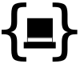

This site is for SierraLogic open source and other projects hosted on github.
For the SierraLogic home page, click here.
Projects
Coax : Coax is a Clojure library that generates and routes REST API via canonical OpenAPI file(s).Templar : Templar is a Clojure library for dependency inversion.
 Tophat : Tophat is a Clojure library for handling HTTP request and response documents/maps.
Xander : Xander is a Clojure library for transformation from/to of XML documents using idiomatic, elegant Clojure maps.